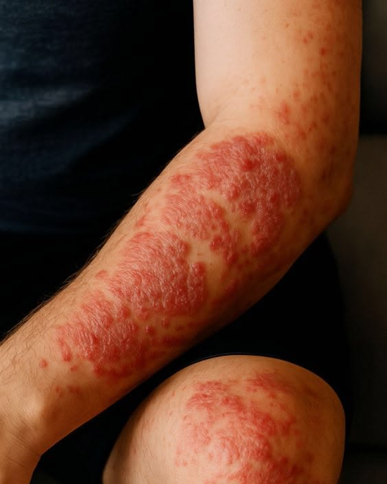
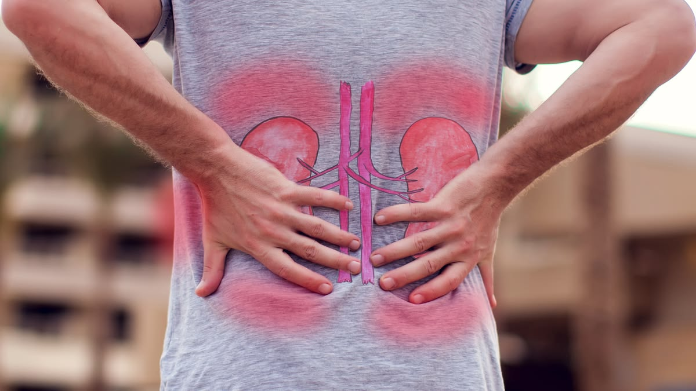
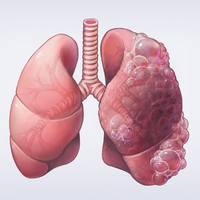
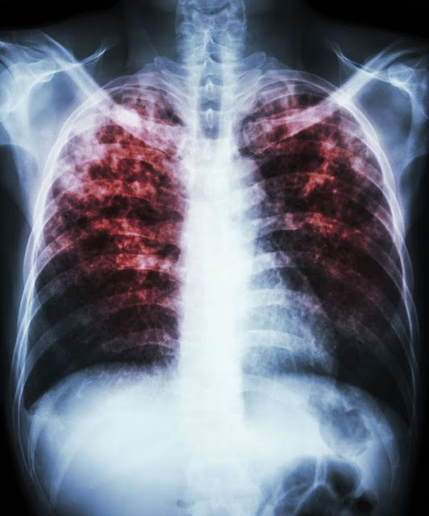
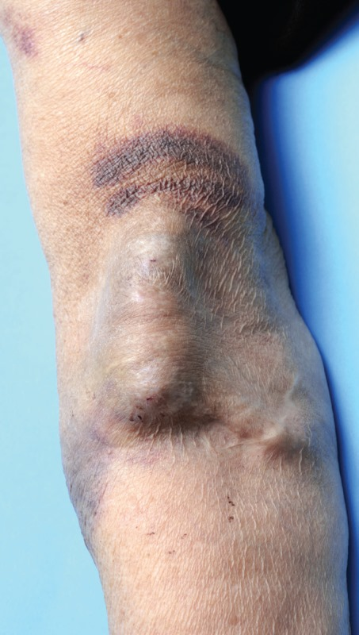

Antibiotic resistance occurs when bacteria develop the ability to survive antibiotics that would normally kill them or stop their growth. This makes certain bacterial infections harder to treat and may require alternative medicines or longer treatment. The unnecessary or inappropriate use of antibiotics contributes to this growing problem. Remember, antibiotics do not work against viruses such as those causing colds and flu. By using antibiotics responsibly, we can help protect their effectiveness for future generations.
Bacteria can develop the ability to survive antibiotics that would normally kill them. It is the bacteria, not your body, that become resistant.
Antibiotics treat bacterial infections, not viral infections like colds and flu.
Bacteria can naturally develop resistance over time. Antibiotic use can encourage resistant bacteria to survive and multiply.
Resistant bacteria can spread through people, contaminated surfaces, food and the environment.
Resistant infections may require stronger or different antibiotics, longer treatment or hospital care.
Taking antibiotics when they aren't needed encourages the development and spread of resistant bacteria.

Resistant staph bacteria can cause boils, abscesses and wound infections.

Some bacteria causing UTIs no longer respond to commonly used antibiotics.

Resistant bacteria can make some lung infections harder to treat.

Certain TB bacteria resist important first-line antibiotics.
These bacteria can cause difficult-to-treat urinary, wound and bloodstream infections.
Severe resistant infections can be fatal.

Antibiotic resistance can complicate dialysis, surgery and organ transplantation, making infections harder to manage.
Prolonged illness and uncertain recovery can cause stress, anxiety and reduced quality of life.
Longer hospital stays, expensive treatments and loss of income can place financial pressure on patients and families.
Ready to test your knowledge? Take on 10 multiple-choice questions about antibiotic resistance and see how well you score!
Here's how you performed.
Your score
80%
Great work! You have a strong understanding of antibiotic resistance.